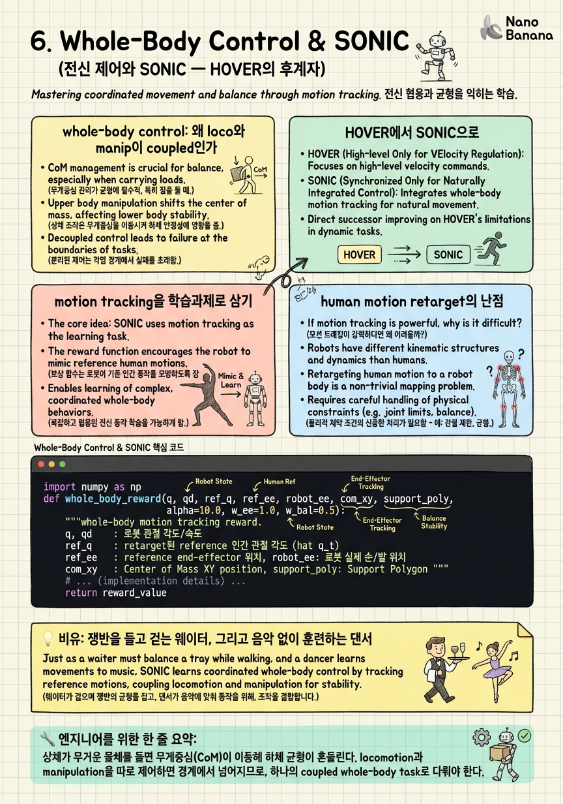

Whole-Body Control & SONIC

🎯 학습 목표
- whole-body control이 locomotion과 manipulation을 왜 하나의 coupled 문제로 다루는지 안다
- SONIC이 motion tracking을 학습과제로 삼는 이유를 안다
- behavior foundation model이 단일 정책으로 다양한 행동을 내는 방식을 설명할 수 있다
- whole-body RL controller가 GR00T VLA에 어떻게 연결되는지 안다
- human motion 데이터가 humanoid 제어에 retarget되는 과정의 난점을 안다
앞 챕터에서 GR00T의 상단 층 — world model 뇌 — 을 파고들었다. 이제 스택의 맨 아래로 내려간다. 뇌가 '무엇을 어떤 순서로'를 정했다면, 실제로 그것을 물리적인 몸으로 실현하는 층이 있어야 한다. 그 층이 whole-body control이고, 2026년 그 최전선 제품이 SONIC이다. 이 챕터의 논제는 이렇다: 저수준 모터 지능은 별도로 학습되어야 하며, 그 학습의 열쇠는 'motion tracking을 스케일러블한 학습과제로 삼는 것'이다.
왜 whole-body인가. 로봇이 무거운 상자를 들어 올리는 순간, 상체의 무게가 전체 무게중심(CoM)을 앞으로 밀고, 그러면 하체가 균형을 잃지 않도록 자세를 다시 잡아야 한다. 즉 팔로 물체를 조작하는 manipulation과 다리로 균형·이동을 담당하는 locomotion은 물리적으로 결합(coupled)되어 있어, 둘을 따로 제어하면 로봇이 넘어진다. loco-manipulation은 이 둘을 하나의 coupled whole-body task로 다루자는 관점이고, whole-body control은 그것을 실현하는 정책이다.
그래서 이 챕터는 다섯 갈래로 나아간다. 먼저 왜 loco와 manip이 물리적으로 coupled인지(CoM과 균형), 다음으로 통합 whole-body 정책의 계보 HOVER에서 behavior foundation model SONIC으로의 전환, 그다음 방대한 human motion 데이터를 supervision으로 바꾸는 'motion tracking as task'의 핵심 아이디어, 이어서 인간과 로봇의 morphology 차이에서 오는 retarget의 난점, 마지막으로 이 저수준 controller가 상단의 VLA·world model 뇌와 어떻게 연결되는지를 본다. tracking reward 코드로 그 학습의 뼈대를 직접 만져본다.
핵심 내용
whole-body control: 왜 loco와 manip이 coupled인가
먼저 못을 박자. locomotion(이동·균형)과 manipulation(물체 조작)은 독립적인 두 문제가 아니라 하나의 물리적으로 결합된 문제다. 이 결합의 정체는 무게중심(CoM, Center of Mass)에 있다.
로봇이 두 발로 서 있을 때 균형의 조건은 대략 이렇다: CoM을 지면에 수직 투영한 점이 두 발이 만드는 지지 다각형(support polygon) 안에 있어야 한다. 이 투영점이 다각형 밖으로 나가면 로봇은 넘어진다. 그런데 상체가 무거운 물체를 들어 올리면 전체 CoM이 물체 쪽으로 이동한다 — 팔을 앞으로 뻗어 상자를 들면 CoM이 앞으로 쏠리고, 투영점이 앞발 끝을 넘어가려 한다. 그러면 하체는 발목·무릎·엉덩이 관절을 써서 자세를 뒤로 기울이거나 한 발을 내디뎌 지지 다각형을 옮겨야 한다. 즉 상체의 manipulation 동작이 하체의 locomotion 문제를 즉시 유발한다.
반대 방향의 결합도 있다. 로봇이 걸어가는 도중(locomotion)에 팔로 물건을 든 채라면, 걸음마다 생기는 관성과 흔들림이 손끝의 위치를 흔들어 manipulation 정밀도를 떨어뜨린다. 걸으면서 물잔을 흘리지 않으려면 다리의 리듬과 팔의 보상 동작이 하나로 조율되어야 한다. 이 양방향 결합 때문에 '팔 정책'과 '다리 정책'을 따로 학습해 붙이면 경계에서 무너진다.
NVIDIA는 이 저수준 층의 역할을 다음과 같이 명시한다.
Whole-body RL training in simulation provides the low-level motor intelligence that GR00T N1.6 uses and coordinates through its higher-level VLA policy.
풀이하면: 시뮬레이션에서의 whole-body RL 학습이 저수준 모터 지능(low-level motor intelligence) 을 제공하고, GR00T N1.6은 이것을 사용하며 상위의 VLA 정책을 통해 조율한다. 핵심 단어는 coordinate(조율)다 — 저수준 층은 팔과 다리를 따로 굴리는 게 아니라 하나의 전신 조율(whole-body coordination)로 움직인다. 그리고 이 층이 생성하는 것은 controller 원문 표현으로 '인간처럼 동적으로 안정적인 motion primitives, 즉 locomotion, manipulation, 그리고 조율된 multi-contact 행동을 아우르는' 동작들이다.
왜 하필 RL(강화학습)인가. CoM 균형은 관절 수십 개가 얽힌 고차원 비선형 동역학이고, 접촉(발-지면, 손-물체)이 매 순간 켜지고 꺼지는 hybrid dynamics다. 이런 문제를 손으로 짠 컨트롤러로 전부 커버하기는 어렵다. 대신 시뮬레이션에서 넘어지고 다시 서기를 수억 번 반복하며, 균형을 유지하는 전신 조율을 데이터로 배우게 하는 것이 whole-body RL이다.
HOVER에서 SONIC으로
이 저수준 층에도 계보가 있다. 2025년 3월, NVIDIA의 R2D2 시리즈 1편에서 공개된 HOVER는 humanoid whole-body control을 위한 하나의 통합 정책(unified policy)이었다. 그 이전까지 humanoid 제어는 걷기 컨트롤러, 손 뻗기 컨트롤러, 자세 유지 컨트롤러가 제각각인 파편화된 풍경이었다. HOVER의 주장은 이 여러 모드를 하나의 신경망 정책이 통합해 담당할 수 있다는 것이었다.
2026년, 그 실질적 후계자가 SONIC이다. SONIC은 단순히 HOVER를 키운 버전이 아니라 프레이밍 자체를 바꾼다 — SONIC은 humanoid behavior foundation model이다. 'foundation model'이라는 단어가 여기서 결정적이다. Language foundation model이 next-token 예측이라는 단일 과제를 대규모로 학습해 번역·요약·코딩 등 무수한 downstream 능력을 창발시키듯, SONIC은 대규모 human motion 데이터로 motion tracking을 스케일러블한 학습과제로 삼아, 하나의 통합 정책이 걷기·기기(crawling)·teleoperation·multi-modal control 등 다양한 whole-body 행동을 생성하게 한다.
두 접근의 성격 차이를 표로 정리하면 이렇다.
| 구분 | HOVER (2025.03) | SONIC (2026) |
|---|---|---|
| 프레이밍 | whole-body control 통합 정책 | humanoid behavior foundation model |
| 학습 신호 | 다중 제어 모드 통합 | 대규모 human motion tracking |
| 커버 행동 | 통합된 whole-body control | 걷기·crawling·teleop·multi-modal |
| 스케일 논리 | 여러 모드를 하나로 | 데이터·과제를 스케일해 행동을 창발 |
| 공개 | R2D2 1편에서 소개 | GEAR-SONIC로 오픈소스 |
SONIC이 오픈소스라는 점도 실무적으로 중요하다. NVlabs/GR00T-WholeBodyControl 레포에 GEAR-SONIC라는 이름으로 공개되어 있고, pretrained checkpoints, C++ inference(실시간 제어를 위한), 그리고 VR teleop 스택까지 포함한다. 즉 개념이 아니라 내려받아 로봇에 올릴 수 있는 실물 stack이다. C++ inference가 들어간 이유는 명확하다 — 균형 제어는 수백 Hz 수준의 실시간 루프라 Python으로는 지연이 커, 배포 단계에서는 컴파일된 저지연 경로가 필요하다.
프레이밍 전환의 무게를 한 번 더 짚자. '통합 정책'에서 'foundation model'로의 이동은 곧 whole-body control을 language·vision과 같은 종류의 문제 — 대규모 데이터와 단일 과제로 일반 능력을 키우는 문제 — 로 재정의했다는 뜻이다. 그 단일 과제가 바로 다음 섹션의 motion tracking이다.
motion tracking을 학습과제로 삼기
SONIC의 심장은 하나의 아이디어다: motion tracking을 학습과제로 삼는다. 정의부터 명확히 하자. motion tracking이란 주어진 reference 인간 동작(mocap이나 video에서 추출한 관절 궤적)을 로봇이 최대한 똑같이 따라 하도록 학습시키는 것이다. 즉 '이 시점에 인간의 각 관절이 이런 각도였다'는 참조 궤적 \(\hat{q}_t\) 를 주고, 로봇의 실제 관절 \(q_t\) 가 그것을 추종하게 만든다.
왜 이 프레이밍이 강력한가. 그 순간 세상에 존재하는 방대한 mocap·video motion 데이터가 전부 supervision(학습 신호)으로 전환되기 때문이다. 인간의 걷기, 물건 집기, 계단 오르기, 춤추기 영상 수천 시간이 '따라 해야 할 정답 궤적'의 무한한 창고가 된다. 로봇 행동을 일일이 손으로 설계하거나 보상 함수를 과제마다 새로 짜는 대신, '인간처럼 움직여라'라는 단일 목표 아래 데이터를 스케일하는 문제로 바뀐다. 이것이 language model이 next-token 예측 하나로 인터넷 텍스트 전체를 supervision으로 삼은 것과 정확히 같은 논리다.
기술적으로 이 목표는 tracking reward로 표현된다. 가장 흔한 형태는 참조와 실제의 관절 오차를 지수 함수로 감싼 것이다.
\[r_t = \exp\!\left(-\alpha \lVert q_t - \hat{q}_t \rVert^2\right)\]
여기서 \(q_t\) 는 시점 \(t\) 의 로봇 관절 상태, \(\hat{q}_t\) 는 같은 시점 reference 인간 동작의 관절 상태, \(\alpha\) 는 오차 민감도를 정하는 계수다. 오차 \(\lVert q_t - \hat{q}_t \rVert\) 가 0이면 보상은 1로 최대, 오차가 커질수록 지수적으로 0에 수렴한다. 지수 형태를 쓰는 이유는 '거의 맞을 때' 미세한 개선에 큰 보상을 줘 정밀 추종을 유도하기 위해서다. 실제로는 관절 각도만이 아니라 관절 속도, 손·발 end-effector 위치, CoM 위치, 몸통 방향 등 여러 항의 tracking reward를 가중합한다.
결정적 포인트: 이 tracking reward 하나가 걷기·기기·teleop을 따로 배우게 하지 않는다. reference 데이터에 걷는 동작이 있으면 걷기를, 기는 동작이 있으면 기기를 배운다. 즉 행동의 다양성은 보상 설계가 아니라 데이터의 다양성에서 나온다. 그래서 'foundation model'이다 — 과제는 하나(추종)인데, 데이터를 스케일하면 행동 레퍼토리가 창발한다.
한 가지 함정을 짚자. 로봇이 reference를 완벽히 추종하려다 오히려 넘어질 수 있다. 인간 궤적이 물리적으로 로봇에게 불안정할 수 있기 때문이다. 그래서 순수 tracking reward에 균형·에너지·부드러움 같은 regularization 항을 더해, '인간처럼 움직이되 넘어지지 않게' 균형을 잡는다. 이 긴장이 다음 섹션 retarget 난점의 뿌리다.
human motion retarget의 난점
motion tracking이 그토록 강력하다면, 왜 humanoid whole-body control이 아직도 어려운가. 병목은 retarget에 있다. retarget이란 인간의 동작 데이터를 로봇의 몸에 맞게 옮기는 변환이다. 그리고 이 변환은 결코 단순 복사가 아니다 — 인간과 로봇의 morphology(형태 구조)가 다르기 때문이다.
morphology 차이는 크게 세 축이다. 첫째, 관절 수와 자유도가 다르다. 인간의 척추·어깨·손목은 수많은 미세 관절로 이뤄져 매끄럽게 휘지만, 로봇은 몇 개의 회전 관절로 근사한다. 인간이 어깨를 으쓱하는 동작을 로봇의 3자유도 어깨로 그대로 옮기면 도달 불가능한 자세가 나온다. 둘째, 링크 길이가 다르다. 인간과 로봇의 팔·다리 길이 비율이 다르면, 인간이 손을 특정 위치에 놓은 궤적을 관절 각도만 복사해 재생했을 때 로봇의 손끝은 전혀 다른 곳에 간다. 셋째, 질량 분포가 다르다. 인간의 살과 뼈 분포와 로봇의 모터·배터리 분포가 다르므로, 같은 관절 궤적이라도 CoM의 위치와 관성이 달라 균형 결과가 달라진다.
이 세 차이가 결합해 만드는 핵심 문제를 리스트로 정리하면 이렇다.
-
도달 불가능성: 인간 궤적의 어떤 자세는 로봇의 관절 한계(joint limit)를 넘어 물리적으로 만들 수 없다.
-
end-effector 불일치: 관절 각도를 복사하면 링크 길이 차이 때문에 손·발의 실제 위치가 어긋난다 — 그래서 관절 각도가 아니라 end-effector 위치를 맞추는 retarget이 필요할 때가 많다.
-
균형 파괴: 질량 분포가 다르므로 인간에게 안정적인 동작이 로봇에게는 CoM을 지지 다각형 밖으로 밀어 넘어뜨린다.
-
발 미끄러짐(foot skating): 시간·스케일 정합이 어긋나면 지면에 붙어 있어야 할 발이 미끄러지듯 떠 물리적으로 불가능한 접촉이 생긴다.
그래서 실무의 retarget은 관절 각도, end-effector 위치, 접촉 제약(발이 언제 지면에 붙어야 하는지)을 동시에 만족시키는 최적화 문제로 푼다. 그리고 완벽한 retarget은 애초에 불가능하기에, SONIC은 retarget된 궤적을 '정확히 복사할 정답'이 아니라 '따라가되 물리적으로 실현 가능하게 조정할 참조'로 다룬다. 앞 섹션의 tracking reward에 균형·접촉 regularization을 더하는 이유가 바로 이것이다 — RL이 시뮬레이션 안에서 인간 궤적과 로봇 물리 사이의 남은 간극을 스스로 메운다.
정리하면, motion tracking은 데이터를 supervision으로 바꾸는 열쇠지만, 그 데이터를 로봇 몸에 이식하는 retarget이 morphology gap이라는 세금을 매긴다. 이 세금을 낮추는 것 — 더 나은 retarget과, 남은 gap을 흡수하는 RL — 이 humanoid whole-body control의 현재 최전선이다.
controller와 VLA의 연결
마지막으로 이 저수준 controller가 스택 전체와 어떻게 맞물리는지를 조립하자. 다시 원문을 보자 — whole-body RL이 저수준 모터 지능을 제공하고, GR00T N1.6이 그것을 '사용하며 상위 VLA 정책을 통해 조율한다(coordinates through its higher-level VLA policy)'. 여기 계층 분리의 핵심이 있다.
역할 분담을 명확히 하자. 상위 VLA 정책(그리고 그 위 world model 뇌)은 무엇을 할지를 정한다 — '저 상자를 집어 선반에 올려라' 같은 목표와 대략적인 상체 궤적. 저수준 whole-body controller(SONIC)는 그것을 넘어지지 않고 어떻게 몸으로를 담당한다 — 상체가 상자를 들 때 이동하는 CoM을 하체가 실시간으로 보상해 균형을 유지한다. VLA는 '상자를 든다'는 의도만 내면 되고, 그로 인한 균형 붕괴를 막는 전신 조율은 controller가 알아서 처리한다.
왜 이렇게 나누는가. 두 층의 시간 스케일이 근본적으로 다르기 때문이다. VLA·world model의 계획은 느리고 드물게(초 단위 목표 갱신) 돌아도 되지만, 균형 제어는 수백 Hz의 촘촘한 실시간 루프여야 한다 — 넘어지는 데는 100밀리초면 충분하다. 이 둘을 하나의 정책으로 섞으면 느린 추론이 빠른 균형 루프의 발목을 잡는다. 그래서 SONIC이 C++ inference로 저지연 실시간 경로를 갖는 것이다. 앞 챕터에서 본 'planning은 위에서 드물게, reaction은 아래에서 촘촘하게'라는 원칙이, 여기서는 'VLA는 의도, controller는 실시간 균형'으로 다시 나타난다.
인터페이스의 관점에서 보면, VLA는 controller에게 목표 상체 자세나 end-effector 궤적, 이동 명령 같은 상위 명령을 넘기고, controller는 그것을 전신 관절 토크로 번역한다. 이 인터페이스 덕분에 두 층은 독립적으로 발전할 수 있다 — VLA는 더 똑똑한 계획을, SONIC은 더 안정적인 모터 지능을 각자 스케일하며, 정해진 명령 규약으로 만난다.
이 코스 전체의 하이브리드 통합 논제 안에서 이 챕터의 자리를 못 박자. world model 뇌(추론·계획), VLA 정책(vision-language-action 매핑), whole-body controller(모터 지능) — 이 셋은 하나의 거대 모델로 뭉뚱그려진 게 아니라, 서로 다른 시간 스케일과 학습 방식(뇌는 world model, controller는 RL+motion tracking)을 가진 층으로 통합된다. SONIC은 그 스택의 발을 땅에 붙이는 층이다. 아무리 똑똑한 계획도 로봇이 넘어지면 무의미하기에, 이 저수준 층이 전체 하이브리드 시스템의 물리적 신뢰성을 떠받친다.
💡 비유로 이해하기
whole-body control의 두 얼굴 — coupling과 behavior foundation model — 을 각각 하나의 일상 장면으로 잡아 보자.
먼저 coupling. 물이 가득 찬 쟁반을 들고 붐비는 홀을 가로지르는 웨이터를 떠올리자. 손(manipulation)은 쟁반을 수평으로 유지해야 하고, 발(locomotion)은 사람을 피하며 걸어야 한다. 그런데 이 둘은 분리될 수 없다. 갑자기 방향을 틀면(발) 관성이 쟁반을 기울이고(손), 그래서 팔은 미리 반대로 보상해야 한다. 무거운 접시를 쟁반 한쪽에 올리면(상체 하중) 몸 전체의 무게중심이 그쪽으로 쏠려, 웨이터는 반대쪽으로 살짝 기울여 균형을 잡는다. 능숙한 웨이터는 손과 발을 따로 생각하지 않는다 — 온몸이 하나의 균형 시스템으로 조율된다. 이것이 바로 CoM 결합이고, 상체 하중이 하체 균형을 흔드는 loco-manipulation coupling이다. 초보 웨이터가 물을 흘리는 이유는 팔과 다리를 따로 제어하기 때문이다.
다음으로 behavior foundation model. 음악을 틀지 않고도 온갖 장르를 소화하는 프로 댄서를 떠올리자. 이 댄서는 왈츠·힙합·발레를 각각 따로 '암기'한 게 아니다. 대신 수천 개의 인간 동작을 몸으로 따라 하며(motion tracking) 몸의 균형·리듬·조율이라는 core를 훈련했다. 그 core 위에서 어떤 참조 동작을 주든 즉석에서 재현한다 — 걷기를 주면 걷고, 구르기를 주면 구른다. SONIC이 정확히 이렇다. 걷기 정책, 기기 정책을 따로 만드는 게 아니라 '인간 동작을 따라 하라'는 단일 과제로 core motor intelligence를 키우고, 그 위에서 다양한 행동이 창발한다.
두 장면을 겹치면 이 챕터의 전체 그림이 된다. 댄서의 core 훈련(motion tracking as task)이 웨이터의 전신 균형(whole-body coupling)을 가능하게 한다. 그리고 인간 안무를 몸집이 다른 로봇에게 옮길 때 팔다리 길이가 안 맞아 그대로는 재현 못 하는 것 — 그것이 retarget의 morphology gap이다. 안무가 아무리 좋아도 무용수의 몸에 맞게 고쳐줘야 실제로 출 수 있다.
💻 코드 예시
SONIC식 whole-body control 학습의 뼈대를 tracking reward + PPO 스타일 업데이트로 스케치한다. 핵심 아이디어: retarget된 reference 인간 동작 \(\hat{q}_t\) 를 로봇 관절 \(q_t\) 가 추종하도록 tracking reward \(r_t = \exp(-\alpha\lVert q_t - \hat{q}_t\rVert^2)\) 를 주고, 여기에 균형(CoM) regularization을 더한 뒤, 그 보상으로 정책을 강화학습한다. '행동의 다양성은 보상이 아니라 reference 데이터에서 나온다'는 foundation-model 논리가 코드에서 드러난다.
import numpy as np
def whole_body_reward(q, qd, ref_q, ref_ee, robot_ee, com_xy, support_poly,
alpha=10.0, w_ee=1.0, w_bal=0.5):
"""whole-body motion tracking reward.
q, qd : 로봇 관절 각도/속도
ref_q : retarget된 reference 인간 관절 각도 (hat q_t)
ref_ee : reference end-effector 위치, robot_ee: 로봇 실제 손/발 위치
com_xy : 현재 CoM의 지면 투영, support_poly: 지지 다각형 중심
"""
# 1) 관절 추종: 오차가 0이면 1, 커지면 지수적으로 0
r_track = np.exp(-alpha * np.sum((q - ref_q) ** 2))
# 2) end-effector 추종: morphology 차이 때문에 관절만으론 부족
r_ee = np.exp(-np.sum((robot_ee - ref_ee) ** 2))
# 3) 균형 regularization: CoM 투영이 지지 다각형에서 멀어지면 벌점
# -> 인간 궤적이 로봇에게 불안정해도 넘어지지 않게 잡아줌
r_bal = np.exp(-np.sum((com_xy - support_poly) ** 2))
return r_track + w_ee * r_ee + w_bal * r_bal
def ppo_update(policy, value, rollouts, clip=0.2, lr=3e-4):
"""PPO 스타일 정책 업데이트 (개념 스케치)."""
obs, act, old_logp, ret, adv = rollouts
logp = policy.log_prob(obs, act) # 새 정책의 로그확률
ratio = np.exp(logp - old_logp) # 확률비 r = pi_new / pi_old
# clipped surrogate: advantage가 좋아도 과한 갱신은 잘라냄
unclipped = ratio * adv
clipped = np.clip(ratio, 1 - clip, 1 + clip) * adv
policy_loss = -np.mean(np.minimum(unclipped, clipped))
value_loss = np.mean((value(obs) - ret) ** 2)
policy.step(policy_loss, lr) # gradient ascent on reward
value.step(value_loss, lr)
return policy_loss, value_loss
# 학습 루프 골격:
# for episode:
# ref = sample_reference_motion() # 걷기/기기/teleop ... 데이터에서
# rollouts = collect(policy, ref, reward_fn=whole_body_reward)
# ppo_update(policy, value, rollouts) # 시뮬에서 넘어지며 반복 학습
# -> 행동 다양성은 sample_reference_motion 의 데이터 분포에서 창발이 스케치가 곧 'motion tracking as task'의 정의다. whole_body_reward의 (1) r_track이 챕터의 핵심 수식 \(r_t=\exp(-\alpha\lVert q_t-\hat q_t\rVert^2)\) 그대로다 — reference 관절 ref_q(\(\hat q_t\))와 로봇 관절 q의 제곱오차를 지수로 감싸, 거의 맞을 때 큰 보상으로 정밀 추종을 유도한다. (2) r_ee가 retarget 난점에 대한 응답이다: morphology 차이로 관절 각도만 맞추면 손끝 위치가 어긋나므로 end-effector 위치를 따로 추종한다. (3) r_bal이 loco-manip coupling을 보상에 새긴다 — CoM 투영이 지지 다각형을 벗어나려 하면 벌점을 줘, 인간 궤적이 로봇에게 불안정해도 넘어지지 않게 하체가 보상하도록 학습된다. ppo_update는 이 보상을 실제 정책 개선으로 바꾸는 RL 엔진으로, clipped surrogate로 한 번에 과하게 갱신되는 것을 막아 안정적으로 reward를 올린다. 결정적 부분은 맨 아래 루프 주석이다 — 매 에피소드 sample_reference_motion으로 걷기/기기/teleop 중 하나를 뽑아 같은 reward·같은 정책으로 학습한다. 걷기 전용 보상도, 기기 전용 정책도 없다. 행동의 다양성은 보상 설계가 아니라 reference 데이터의 분포에서 창발한다 — 이것이 SONIC이 behavior foundation model인 코드 수준의 이유다.
🏭 현업에서의 평가
✅ 시니어가 보는 것
- loco-manipulation coupling을 CoM과 지지 다각형(support polygon) 균형 조건으로 물리적으로 설명 (상체 하중 -> CoM 이동 -> 하체 보상)
- motion tracking을 학습과제로 삼는 것이 왜 방대한 mocap/video를 supervision으로 전환하는지, 그리고 행동 다양성이 데이터 분포에서 창발함을 이해
- tracking reward의 지수 형태와 균형·end-effector regularization을 함께 설계할 줄 앎
- retarget의 morphology gap을 관절 수·링크 길이·질량 분포 세 축으로 분해하고, 도달 불가능성·발 미끄러짐·균형 파괴 같은 구체적 실패를 지목
- 저수준 controller와 상위 VLA를 시간 스케일(수백 Hz 균형 vs 초 단위 계획)로 분리하는 계층 설계와 C++ 실시간 inference의 필요성을 논증
⚠️ 레드 플래그
- locomotion과 manipulation을 독립 문제로 보고 팔 정책·다리 정책을 따로 붙이면 된다고 생각
- motion tracking을 단순 모방으로만 보고, 그것이 데이터를 supervision으로 바꾸는 '스케일러블 과제'라는 프레이밍을 놓침
- retarget을 관절 각도 복사로 오해하고 morphology gap(링크 길이·질량 분포·joint limit)을 무시
- 인간 궤적을 '완벽히 복사할 정답'으로 취급하고 균형 regularization·RL 보정의 필요성을 모름
- 저수준 균형 제어를 상위 VLA/LLM에 통째로 맡기려 하고 실시간 루프의 시간 스케일 제약을 인지 못 함
🎤 예상 인터뷰 질문
- humanoid가 무거운 상자를 앞으로 들 때 왜 하체 제어가 개입해야 하는가? CoM과 지지 다각형으로 loco-manipulation coupling을 설명하고, 팔·다리 정책을 따로 학습하면 왜 경계에서 무너지는지 논하라.
- 'motion tracking을 학습과제로 삼는다'가 왜 whole-body control을 foundation model 문제로 바꾸는가? tracking reward를 쓰되 행동 다양성을 데이터에서 창발시키는 학습 루프를 설계하라.
- 인간 mocap을 로봇에 retarget할 때 발생하는 morphology gap을 관절 수·링크 길이·질량 분포로 분해하고, 각각이 유발하는 구체적 실패(도달 불가·end-effector 불일치·균형 파괴·발 미끄러짐)와 완화책을 답하라.
- SONIC 같은 저수준 controller와 상위 VLA 정책을 왜 하나로 합치지 않고 층으로 나누는가? 두 층의 시간 스케일, 인터페이스(상위 명령 -> 관절 토크), 그리고 C++ 실시간 inference가 필요한 이유를 설명하라.
✨ 핵심 요약
loco와 manip은 CoM으로 물리적으로 결합돼 있다
상체가 무거운 물체를 들면 무게중심(CoM)이 이동해 하체 균형이 흔들린다. locomotion과 manipulation을 따로 제어하면 경계에서 넘어지므로, 하나의 coupled whole-body task로 다뤄야 한다.
whole-body RL이 저수준 모터 지능을 제공한다
시뮬레이션의 whole-body RL이 인간처럼 동적으로 안정적인 motion primitives(locomotion·manipulation·multi-contact)를 만들고, GR00T N1.6이 이를 상위 VLA 정책으로 조율한다. 팔·다리가 아니라 전신이 하나로 움직인다.
HOVER에서 SONIC으로: 통합 정책에서 behavior foundation model로
HOVER(2025.03)가 whole-body control 통합 정책이었다면, SONIC(2026)은 그 실질적 후계자이자 humanoid behavior foundation model이다. GEAR-SONIC로 오픈소스(checkpoints·C++ inference·VR teleop).
motion tracking을 학습과제로 삼으면 데이터가 supervision이 된다
reference 인간 동작을 추종하게 학습시키면 방대한 mocap/video motion이 전부 학습 신호로 전환된다. tracking reward는 exp(-alpha||q_t - q_hat_t||^2) 형태로, 오차가 작을수록 지수적으로 큰 보상.
행동 다양성은 보상이 아니라 데이터에서 창발한다
과제는 하나(추종)인데, reference 데이터에 걷기·기기·teleop이 있으면 그 행동들이 창발한다. 이것이 SONIC을 걷기 정책·기기 정책의 합이 아니라 foundation model로 만든다.
retarget의 병목은 morphology gap이다
인간과 로봇의 관절 수·링크 길이·질량 분포 차이 때문에 인간 동작을 그대로 복사할 수 없다. 도달 불가능성·end-effector 불일치·균형 파괴·발 미끄러짐이 생기므로, retarget은 관절·end-effector·접촉 제약을 함께 푸는 최적화다.
인간 궤적은 정답이 아니라 참조다, 남은 gap은 RL이 메운다
완벽한 retarget은 불가능하므로 SONIC은 retarget 궤적을 '따라가되 물리적으로 실현 가능하게 조정할 참조'로 다룬다. tracking reward에 균형·접촉 regularization을 더해 RL이 morphology gap을 시뮬레이션에서 흡수한다.
controller와 VLA는 시간 스케일로 분리된다
VLA/world model은 '무엇을'을 초 단위로 느리게 정하고, SONIC은 '넘어지지 않게 어떻게'를 수백 Hz 실시간으로 담당한다(그래서 C++ inference). 이 계층 분리가 하이브리드 스택의 발을 땅에 붙여 물리적 신뢰성을 떠받친다.